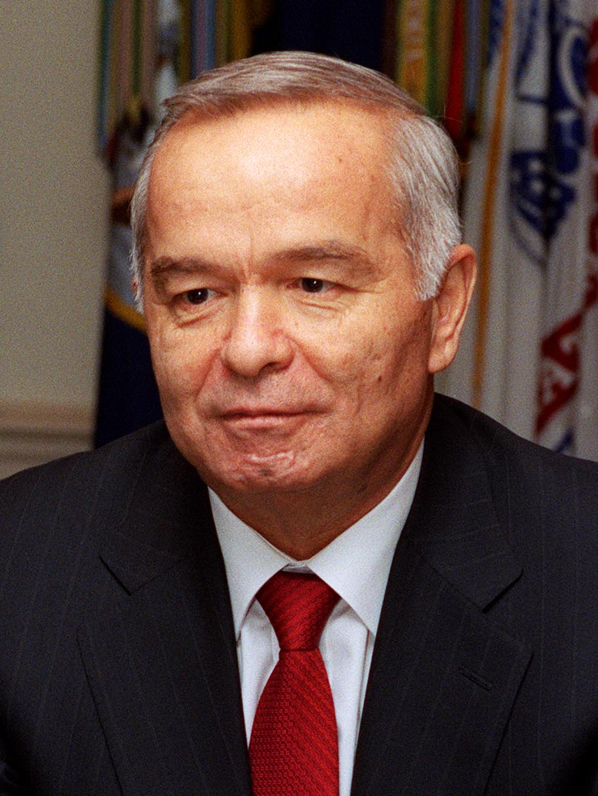

The Karshi-Khanabad (K2) air base and Uzbek–US military cooperation (2001–2005)
After the attacks of 11 September 2001, Uzbekistan granted the US military use of the former Soviet air base at Karshi-Khanabad (K2) to support Operation Enduring Freedom in Afghanistan. The base was used for logistics, search-and-rescue, and special forces; in March 2002 the two states signed a Declaration on Strategic Partnership. After the Andijon events of May 2005 and the ensuing diplomatic tension, Uzbekistan gave formal notice to vacate the base; US forces departed that November. A historical reference, facts only.

One of the sharpest turns in independent Uzbekistan's foreign policy came in the autumn of 2001: the country granted the US military use of a former Soviet air base. Known as 'K2,' the base became an important support point for operations in Afghanistan for four years, and was closed in 2005. The following sets out its history, facts only.
What K2 is
Karshi-Khanabad is a former Soviet-era air base in southeastern Uzbekistan, near Khanabad in the Kashkadarya region; US forces called it 'K2.' The base lies about 145 kilometres from the Afghan border. On 30 June 1992 the base passed from the dissolving Soviet Union to independent Uzbekistan. Once US forces were stationed there, the installation was named 'Camp Stronghold Freedom.'
The 2001 agreement
After the terrorist attacks of 11 September 2001, Uzbekistan granted the US military use of K2 to support Operation Enduring Freedom in Afghanistan. The status-of-forces arrangement is dated to 7 October 2001 — the day the air campaign in Afghanistan began. Under the agreement, the US could station up to 1,500 troops at the base.

What the base was used for
K2 served mainly as a forward air-logistics hub — moving troops and supplies into Afghanistan via C-130 military transport aircraft — as well as for combat search-and-rescue and support of special forces. On 12 December 2001 a land-component command headquarters of the 10th Mountain Division was established at the base. Over 2001–2005, roughly 7,000 US service members rotated through K2 (not simultaneously, but in turns).
March 2002: Strategic Partnership
On 12 March 2002, Uzbek President Islam Karimov met US President George W. Bush at the White House. During this period the two states signed the 'Declaration on the Strategic Partnership and Cooperation Framework.' The document recorded Uzbekistan's commitments on economic liberalization, improving human rights, and democratic reform, alongside US assistance.
The end of the agreement (2005)
In May 2005, events in the city of Andijon in eastern Uzbekistan, and the criticism voiced by the West afterwards, strained relations between the two states. On 29 July 2005, Uzbekistan's Foreign Ministry delivered a formal notice to the US Embassy demanding that the base — equipment, personnel, and matériel — be vacated within 180 days (six months). US forces ended their operations at K2 in November of that year.
The aftermath
After K2 closed, Uzbek–Russian ties warmed sharply: on 14 November 2005 the two states signed a Treaty on Allied Relations that included a mutual-defense clause. Later, around 2012 — after NATO supply routes through Pakistan were disrupted and Uzbekistan gained importance in the Northern Distribution Network — Uzbek–US military cooperation was re-established in a limited form.
Why this history matters
The history of the Karshi-Khanabad base clearly shows independent Uzbekistan's search for balance in its foreign policy of the 2000s — managing relations with the US, Russia, and China at the same time. For today's diaspora, it is a part of the homeland's history closely bound up with international politics. This reference presents only verified facts and dates.

Sources
- Congressional Research Service — Uzbekistan's Closure of the Airbase at Karshi-Khanabad: Context and Implications (RS22295)
- Al Jazeera — Uzbekistan evicts US from base (29–30 July 2005; 180-day notice)
- Wikipedia — Karshi-Khanabad Air Base (location; 30 June 1992 handover; Camp Stronghold Freedom; ~7,000 cumulative personnel; November 2005 withdrawal)
- Wikipedia — United States–Uzbekistan relations (12 March 2002 White House visit; Declaration on Strategic Partnership; 1,500 troop authorization)
- RFE/RL — Putin, Karimov sign 'unprecedented' alliance treaty (14 November 2005)